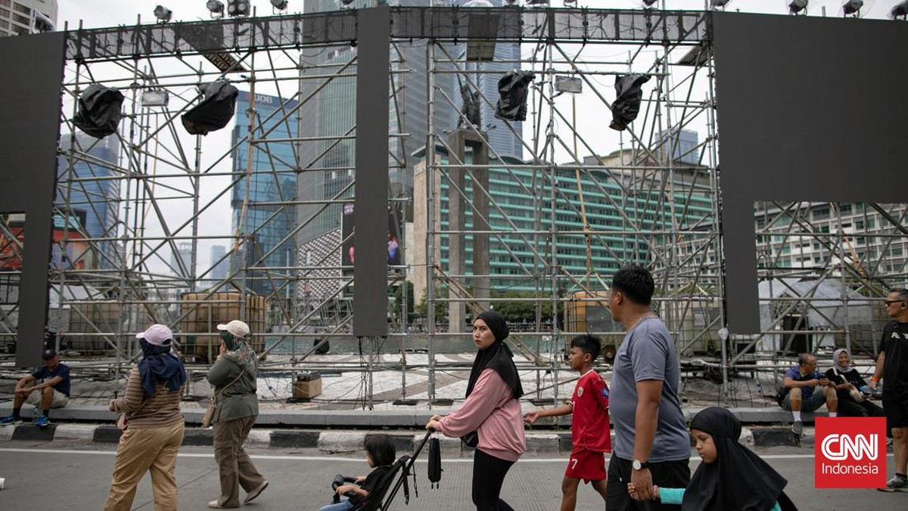

New
Bali Dapat Pengakuan Internasional Lagi Sebagai Tempat Terindah
Purwakarta, AboutNews-- Pulau Bali dinobatkan sebagai salah satu dari 71 tempat terindah di dunia oleh majalah berbasis di Inggris, Condé Nast Traveller. Majalah itu mendeskripsikan Bali sebagai tempat yang memiliki desa-desa artistik yang sederhana.


5 Gaya Rambut Pria Ini Diprediksi Bakal Populer di 2025
Purwakarta, AboutNews-- Tahun 2025 adalah tahun yang tepat bagi Anda untuk eksplorasi gaya rambut demi meningkatkan penampilan. Berikut beberapa gaya rambut pria yang diprediksi bakal nge-tren di tahun 2025. Potongan rambut adalah salah satu cara paling efektif untuk mengubah penampilan. Tahun 2025, dunia mode pria menawarkan berbagai pilihan potongan rambut yang tak hanya modis, tetapi juga mudah diadaptasi dengan berbagai bentuk wajah.